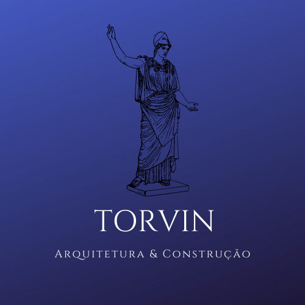

Nascemos em 05 de outubro de 1950 nas mãos de José Benedito da Costa e durante todos esses 70 anos adquirimos todos os tipos de experiências, algumas
ruins e outras em contrapartida muito boas. A TORVIN S.A se orgulha por nascer no ramo da engenharia e se especializar na arquitetura moderna com
a presença de ilustres arquitetos ao longo de nossa história,
assim crescemos no mercado da construção brasileira e hoje somos uma das maiores empresas nacional no ramo.
Tivemos o privilégio de trabalhar em conjunto com um dos melhores arquiteto de todos os tempos do Brasil, Oscar Niemeyer o qual foi responsável
pelo desenvolvimente da arquitetura moderna no país. Trabalhamos em conjunto com muito prazer com João Batista Vilanova Artigas arquiteto curitibano
associado ao movimento arquitetônico conhecido como Escola paulista, responsável por projetar o maior estádio particular do Brasil, estádio
Cícero Pompeu de Toledo, o famoso Morumbi.
Estivemos presente em obras importantes na capital fedederal Brasília. Assim como estivemos
presente na construção de importantes hospitais, rodovias, estádios e pontes pelo nosso querido Brasil.
Brevemente isto é um pouco da grande história desta empresa magnífica chamada TORVIN S.A Arquitetura & Construção.